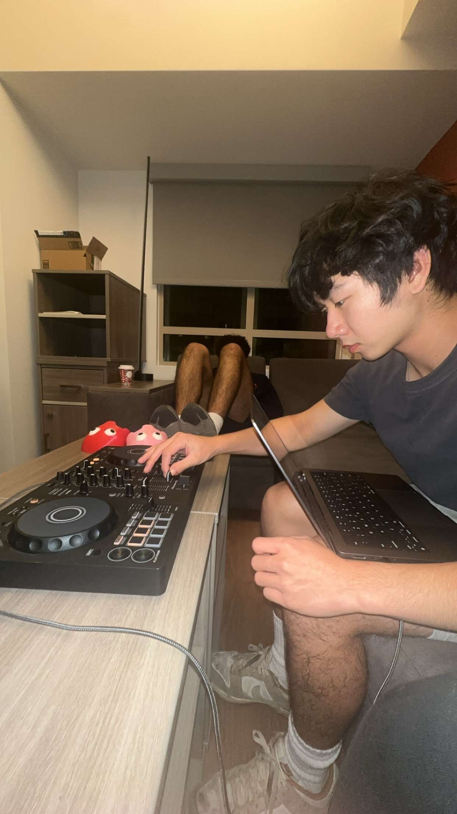
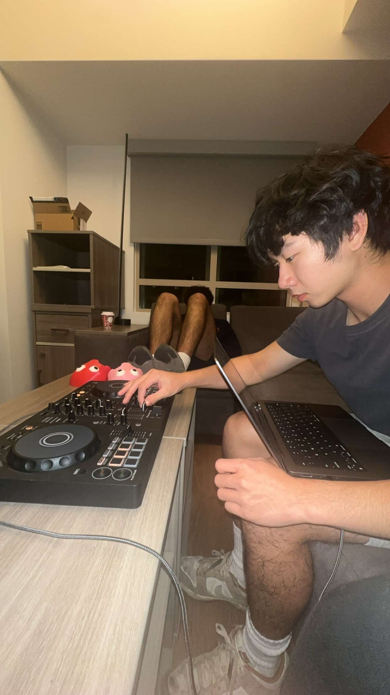

Whether it's tennis, pickleball, ping pong, or badminton, I've always loved battling it out on the court! Right now, I'm currently competing with the USC Club Tennis Team and enjoy spamming dinks in pickleball!


I've been playing piano since the age of 5 and have continued to spread the joy of music to those around me. Though I started off playing in nursing homes and school concerts, I've ventured into the world of content creation and grown my TikTok @aznduck.piano to over 1.5k followers and 300k+ likes! Check out some of my pieces!

 


Our coach might say we spent more time building our team's Instagram than practicing (he might be right), but through it, I learned lots about graphic design and filmmaking. This senior year hype reel took countless hours of planning, filming, and editing with my friends and led us to a state championship!

After seeing so many college decision videos during my application season, I had to make one of my own... This emotional rollercoaster recounts my college application process and shows some of my craziest reactions. It reached ~100k views on YouTube, making it my most watched video!
As Media Chair, I curated this video to showcase the ins and outs of the Theta Tau! Built on the three pillars on Social, Professional, and Service, this video was displayed in person to over 250 rushees and viewed by many many more online!